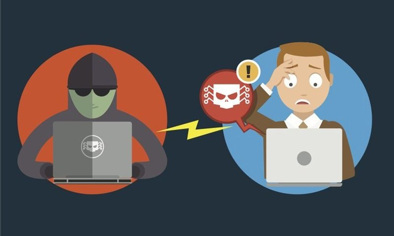
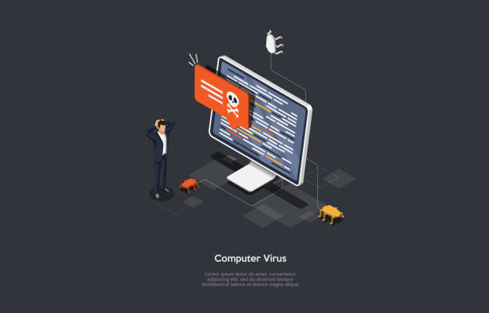

Ataques Comunes
A continuación se describen algunos de los ataques más frecuentes:
Phishing
Phishing es un término informático que distingue a un conjunto de técnicas que persiguen el engaño a una víctima ganándose su confianza haciéndose pasar por una persona, empresa o servicio de confianza (suplantación de identidad de tercero de confianza), para manipularla y hacer que realice acciones que no debería realizar (por ejemplo, revelar información confidencial o hacer click en un enlace). Para realizar el engaño, habitualmente se hace uso de la ingeniería social explotando los instintos sociales de la gente, como es de ayudar o ser eficiente. También mediante la adulación de la víctima, explotando su intrínseca vanidad o necesidad de ser reconocido, baja autoestima, o una persona que busca trabajo. Por ejemplo, enviando correos electrónicos o mostrando publicidades a la víctima diciéndole que ha ganado un premio y que siga un enlace para recibirlo, siendo aquellas promesas falsas (un cebo). A veces también se hace uso de procedimientos informáticos que aprovechan vulnerabilidades. Habitualmente el objetivo es robar información, pero otras veces es instalar malware, sabotear sistemas, o robar dinero a través de fraudes.

Aquí puedes ver un breve video sobre el phishing.
También puedes escuchar solamente el audio si así lo deseas.
Ransomware
Un ransomware (del inglés ransom, 'rescate', y ware, acortamiento de software) o 'secuestro de datos' en español, es un tipo de programa dañino que restringe el acceso a determinadas partes o archivos del sistema operativo infectado y pide un rescate a cambio de quitar esta restricción. Algunos tipos de ransomware cifran los archivos del sistema operativo inutilizando el dispositivo y coaccionando al usuario a pagar el rescate. En los primeros tiempos el pago se hacía a través de cuentas bancarias de países opacos, pero como el rastreo al delincuente era posible, se pasó al uso de monedas virtuales no rastreables.
Aquí puedes ver un breve video sobre el ransomware.
También puedes escuchar solamente el audio si así lo deseas.
Malware
Un malware es cualquier tipo de software que realiza acciones dañinas en un sistema informático de forma intencionada y sin el conocimiento del usuario. Ejemplos típicos de estas actividades maliciosas son el robo de información, dañar o causar un mal funcionamiento del sistema informático, provocar perjuicios económicos, chantajear a propietarios de los datos de sistemas informáticos, permitir el acceso de usuarios no autorizados, provocar molestias o una combinación de varias de estas actividades.
Aquí puedes ver un breve video sobre el malware.
También puedes escuchar solamente el audio si así lo deseas.